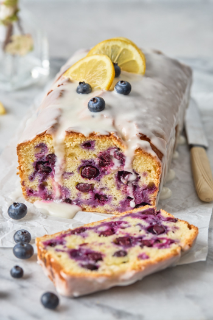

Blueberry Lemon Loaf Cake

This blueberry lemon loaf cake is the perfect treat to enjoy when the
seasons are transitioning from Winter to Spring! The warmth and coziness of
baking a loaf cake with the bright and sweet flavors of citrus and blueberries
are sure to make you enjoy the anticipation of warmer days.